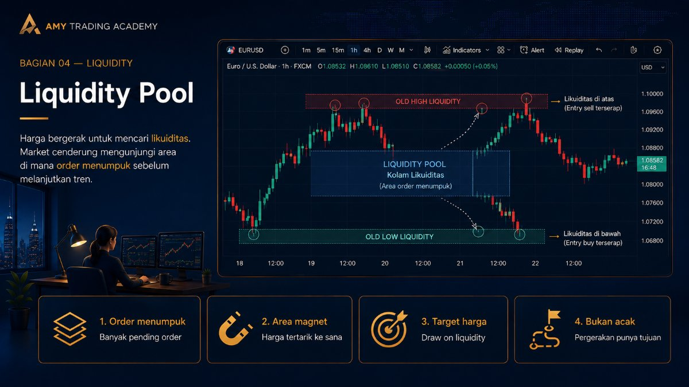
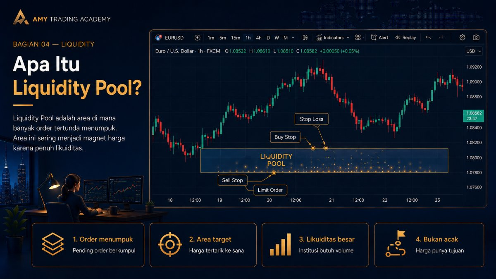
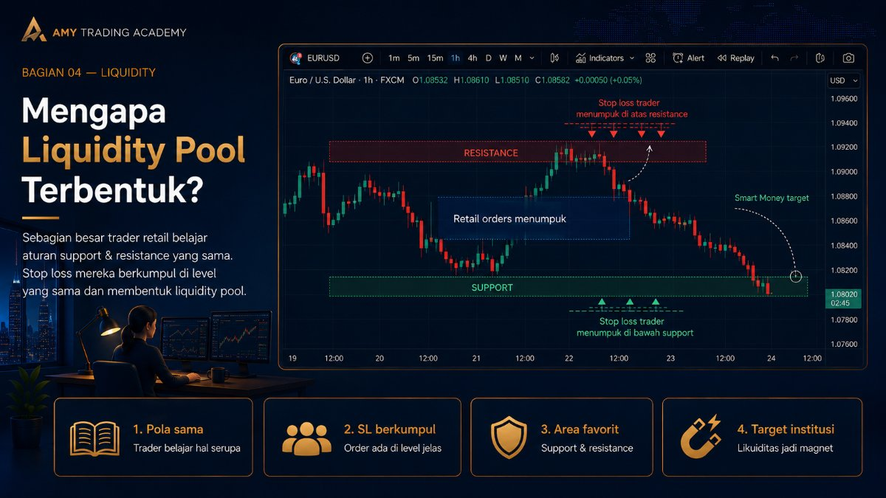
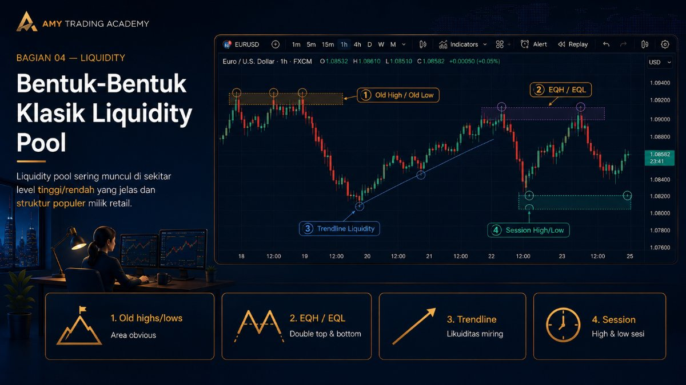
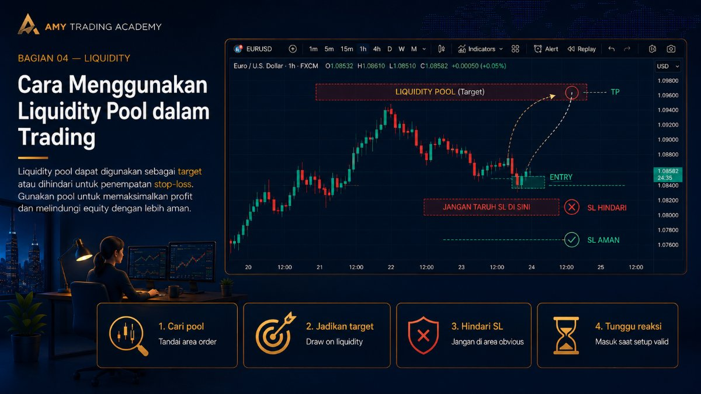

Liquidity Pool

Di bab-bab sebelumnya, kita sudah membedah likuiditas secara spesifik: Buy Side Liquidity (BSL) di atas harga, dan Sell Side Liquidity (SSL) di bawah harga. Kita juga sudah membahas bentuk ekstremnya, yaitu Equal High dan Equal Low. Sekarang, mari kita satukan konsep-konsep tersebut ke dalam satu istilah payung besar yang sering disebut sebagai Liquidity Pool.
Memahami Liquidity Pool akan mengubah caramu melihat pergerakan harga. Kamu tidak lagi melihat chart sebagai sekumpulan candle naik dan turun yang acak, melainkan sebagai sebuah peta harta karun di mana "uang" sedang menunggu untuk diambil.
Apa Itu Liquidity Pool?

Bayangkan sebuah padang pasir yang luas. Di padang pasir tersebut, hewan-hewan tidak tersebar secara merata. Mereka akan berkumpul di satu tempat: sumber air (oasis), karena mereka membutuhkannya untuk bertahan hidup. Di dunia trading, institusi raksasa (Smart Money) adalah "hewan besar" yang butuh bertahan hidup, dan tumpukan order (uang) trader ritel adalah sumber airnya.
Liquidity Pool (kolam likuiditas) adalah area spesifik pada chart di mana ribuan, bahkan jutaan order yang tertunda (pending orders seperti Stop Loss, Buy Stop, dan Sell Stop) saling menumpuk dan terkonsentrasi di satu titik harga.
Harga di market jarang sekali bergerak ke area kosong tanpa alasan. Algoritma (IPDA) selalu menarik harga (magnet) menuju ke mana Liquidity Pool terbesar saat ini berada.
Mengapa Liquidity Pool Terbentuk?

Kamu mungkin bertanya, "Kenapa order-order itu bisa menumpuk di satu tempat? Kenapa tidak menyebar rata saja?" Jawabannya terletak pada bagaimana industri edukasi trading ritel bekerja selama puluhan tahun.
Hampir semua trader ritel di dunia membaca buku teknikal analisis yang sama. Mereka diajarkan teori yang sama persis: "Beli di support, jual di resistance, letakkan Stop Loss 10-20 pips di bawah/atas level tersebut." Karena jutaan orang di seluruh dunia dilatih untuk berpikir dan bertindak dengan cara yang persis sama, mereka menempatkan uang mereka (berupa Stop Loss) di koordinat harga yang sama persis.
Keseragaman inilah yang menciptakan kantong-kantong (pools) likuiditas yang sangat padat. Smart Money tidak perlu repot mencari di mana uang ritel berada; mereka cukup melihat chart dan mencari area Support/Resistance atau pola klasik lainnya, karena di situlah Liquidity Pool terbentuk.
Bentuk-Bentuk Klasik Liquidity Pool

Berdasarkan pembahasan kita sejauh ini, berikut adalah lokasi-lokasi favorit di mana Liquidity Pool terbentuk:
- Old Highs dan Old Lows: Puncak dan lembah yang sangat mencolok di chart. Semakin jelas terlihat, semakin banyak order bersarang di atas/di bawahnya.
- Equal Highs dan Equal Lows (Double Top/Bottom): Seperti yang kita bahas di bab sebelumnya, ini adalah Liquidity Pool yang sangat masif (engineered liquidity).
- Trendline Liquidity: Ini adalah pola favorit trader ritel. Setiap kali harga menyentuh garis miring (trendline) untuk yang ketiga atau keempat kalinya, ritel akan entry dan meletakkan SL di luar garis tersebut. Ini menciptakan Liquidity Pool yang membentang miring sepanjang trendline. Smart Money sering kali menembus (menghancurkan) trendline ini untuk menyapu bersih kolam likuiditas tersebut.
- Session Boundaries: Titik tertinggi dan terendah pada sesi trading utama (terutama High dan Low sesi Asia).
Cara Menggunakan Liquidity Pool dalam Trading

Setelah kamu bisa mengidentifikasi di mana Liquidity Pool berada, apa yang harus kamu lakukan? Dalam metodologi SMC/ICT, kita menggunakan Liquidity Pool untuk dua fungsi krusial:
1. Sebagai Target Harga (Draw on Liquidity)
Fungsi paling utama dari Liquidity Pool adalah sebagai Target Take Profit (TP). Ketika kamu masuk posisi (entry) berdasarkan sebuah setup yang valid (misalnya pantulan dari Fair Value Gap), kamu harus bertanya: "Ke mana harga akan pergi setelah ini?" Jawabannya adalah menuju Liquidity Pool terdekat dan terbesar.
Jika kamu entry Buy di area discount, target (TP) rasionalmu adalah Liquidity Pool yang ada di area premium (seperti Old High atau Equal Highs). Jangan asal meletakkan TP di angka psikologis acak; letakkan di mana likuiditas berada, karena algoritma memang sedang menuju ke sana.
2. Sebagai Area yang Harus Dihindari untuk Stop Loss
Fungsi kedua adalah pencegahan. Jika kamu tahu bahwa sebuah level adalah Liquidity Pool, jangan pernah meletakkan Stop Loss-mu di area tersebut atau tepat di belakangnya. Jika kamu meletakkan SL di dalam Liquidity Pool, kamu sedang memberikan bensin kepada Smart Money.
Letakkan Stop Loss-mu di tempat yang tidak logis bagi trader ritel, atau di belakang struktur harga yang memang dilindungi oleh institusi (misalnya di belakang sumbu (wick) sebuah Order Block yang valid).
Kesimpulan: Berhentilah memandang chart sebagai sekumpulan pola geometris. Mulailah melihat chart dari kacamata likuiditas: di mana letak uangnya, siapa yang akan disapu, dan ke mana market maker akan memindahkan harga selanjutnya.